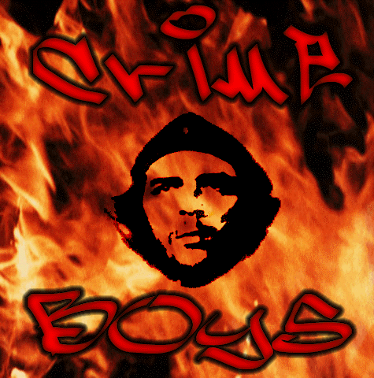

Crime Boys once more... Fuck Off Gov.br !
________________________________________________
Racistas otários nos deixem em paz ________________________________________________ Povo da periferia, maioria, poder para maioria, poder para nosso povo... Crime Boys, a voz que não se cala. Greetz: MaskMaster, H0sT_L0sT, Psyh4ck,
VetesGirl, nosmiles, GeeFunk, sector, M3L40, #linuxbr (BrasNet), e todas pessoas que acreditam na gente... Fuckz: precisa dizer? The e-mail of Crime Boys is: Crime Boys is: Leitão.s0laris
Pois as famílias pobres não aguentam mais
Pois todos sabem e elas temem
A indiferença por gente carente que se tem
E eles vêem
Por toda autoridade o preconceito eterno
E de repente o nosso espaço se transforma
Num verdadeiro inferno e reclamar direitos
De que forma
Se somos meros cidadãos
E eles o sistema
E a nossa desinformação é o maior problema
Mas mesmo assim enfim
Queremos ser iguais
Racistas otários nos deixem em paz
Racistas otários nos deixem em paz
Justiça
Em nome disse eles são pagos
Mas a noção que se tem
É limitada e eu sei
Que a lei
É implacável com os oprimidos
Tornam bandidos os que eram pessoas de bem
Pois já é tão claro que é mais fácil dizer
Que eles são os certos e o culpado é você
Se existe ou não a culpa
Ninguém se preocupa
Pois em todo caso haverá sempre uma desculpa
O abuso é demais
Pra eles tanto faz
Não passará de simples fotos nos jornais
Pois gente negra e carente
Não muito influente
E pouco frequente nas colunas sociais
Então eu digo meu rapaz
Esteja constante ou abrirão o seu bolso
E jogarão um flagrante num presídio qualquer
Será um irmão a mais
Racistas otários nos deixem em paz
Racistas otários nos deixem em paz
Então a velha história outra vez se repete
Por um sistema falido
Como marionetes nós somos movidos
E há muito tempo tem sido assim
Nos empurram à incerteza e ao crime enfim
Porque aí certamente estão se preparando
Com carros e armas nos esperando
E os poderosos me seguram observando
O rotineiro Holocausto urbano
O sistema é racista cruel
Levam cada vez mais
Irmãos aos bancos dos réus
Os sociólogos preferem ser imparciais
E dizem ser financeiro o nosso dilema
Mas se analizarmos bem mais você descobre
Que negro e branco pobre se parecem
Mas não são iguais
Crianças vão nascendo
Em condições bem precárias
Se desenvolvendo sem a paz necessária
São filhos de pais sofridos
E por esse mesmo motivo
Nível de informação é um tanto reduzido
Não...
É um absurdo
São pessoas assim que se fodem com tudo
E que no dia a dia vive tensa e insegura
E sofre as covardias humilhações torturas
A conclusão é sua...KL Jay
Porém direi para vocês irmãos
Nossos motivos pra lutar ainda são os mesmos
O preconceito e desprezo ainda são iguais
Nós somos negros também temos nossos ideais
Racistas otários nos deixem em paz
Racistas otários nos deixem em paz
Os poderosos são covardes desleais
Espancam negros nas ruas por motivos banais
E nossos ancestrais
Por igualdade lutaram
Se rebelaram morreram
E hoje o que fazemos
Assistimos a tudo de braços cruzados
Até parece que nem somos nós os prejudicados
Enquanto você sossegado foge da questão
Eles circulam na rua com uma descrição
Que é parecida com a sua
Cabelo cor e feição
Será que eles vêem em nós um marginal padrão
50 anos agoras se completam
Da lei anti-racismo na constituição
Infalível na teoria
Inútil no dia a dia
Então que fodam-se eles com sua demagogia
No meu pais o preconceito é eficaz
Te cumprimentam na frente
E te dão um tiro por trás
"O Brasil é um pais de clima tropical
Onde as raças se misturam naturalmente
E não há preconceito racial HaHa....."
Nossos motivos pra lutar ainda são os mesmos
O preconceito e o desprezo ainda são iguais
Nós somos negros também temos nossos ideais